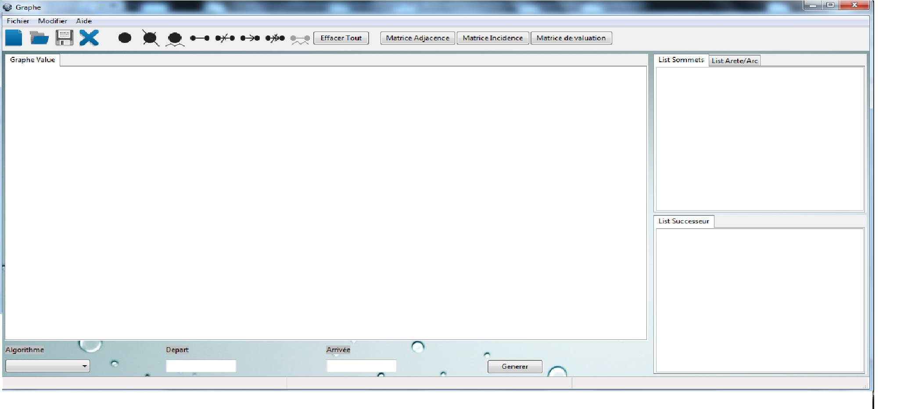
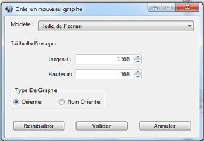
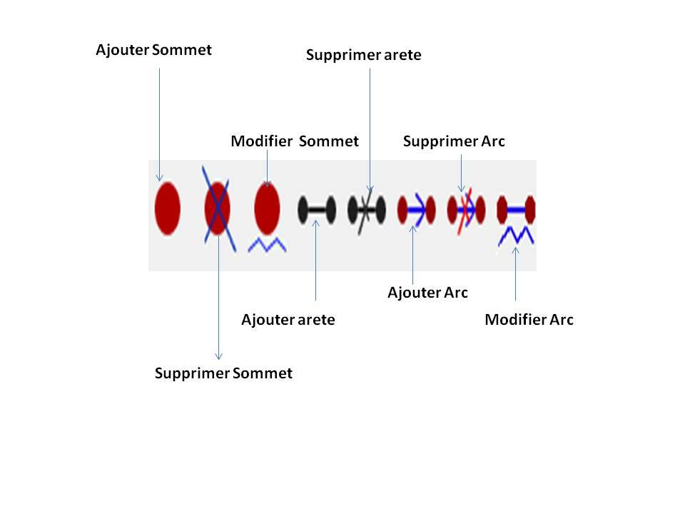

La barre de menu permet à l'utilisateur de choisir plusieurs fonctionnalités selon ses besoins. La première barre contient les fonctionnalités Fichier et Modifier et l'aide.
La première lui permet de crée un nouveau projet ou d'ouvrir un projet et l'enregistrement ou quitter l'application, pour <Modifier> lui permet d'ajouter ou de supprimer des composantes dans le graphe.
La deuxième barre contient les raccourcis pour les fonctionnalités quand vient de décrire notre graphe ce la est illustré dans la figure qui suit : (Nouveau,ouvrir,sauvegarder, sortir)
Lorsque vous cliquez sur Nouveau, une autre fenetre apparaisse, c'est une fenetre pour manipuler la surface de dessin et pérciser le type de graphe (orienté ou non) comme le montre 
La meme barre contient les outilles de dessin pour obtenir notre graphe comme tracer les sommets, les arcs et pour supprimer ou modifier comme le montre la figure. 
Comment ajouter un sommet ? D'abord, Vous cliquez sur le bouton d'ajout d'un sommet puis vous cliquez sur l'interface de dessin dans l'endroit ou vous voulez.
Comment deplacez un sommet ? Vous posez le curseur de la souris sur le sommet que vous voulez puis vous glissez en maintenant le bouton droit enfonce.
Comment supprimer un sommet ? Tout simplement cliquez sur le bouton de suppression d'un sommet puis vous cliquez sur le sommet que vous voulez supprimer.
Comment modifier un sommet ? Cliquer sur modifier sommet puis sur le sommet que vous voulez modifier et faire entrer un nouveau nom de sommet .
Comment dessiner un arc ? D'abord, vous cliquez sur le bouton d'ajout d'un arc et vous selectionne deux sommet (en cas d'un graphe orienter le 1er sommet selectionne sera le debut de l'arc et le 2eme sera la fin de l'arc).
Comment supprimer un arc ? Par un simple processus identique a l'ajout d'un arc sauf vous cliquez sur bouton de suppression d'un arc puis vous indiquez les deux sommets de l'arc que vous voulez supprimer
Comment modifier la valeur d'un arc ? cliquez sur Modifier arc , puis selectionner le debut et la fin de l'arc puis entrer la valeur voulu en selectionnant l'arc voulu.
Remarque :
tous les processus de manipulation des composantes du graphe(sommet, arc) en cas orienté sont disponible en cas non orienté . Et bien sure vous pouvez avoir les matrices (matrice d'adjacence , d'incidence et de valuation ) pour avoir une representation du graphe sous forme de matrices. Vous pouvez voir à droite de l'application quelque information sur les sommets, les successeurs d'un sommet, listes Arc(Arete). Et en bas de dessin vous pouvez lancer l'exécution (trouver plus court chemin) en commencant par le choix d'algorithme puis le sommet de départ et point d'arrivée.